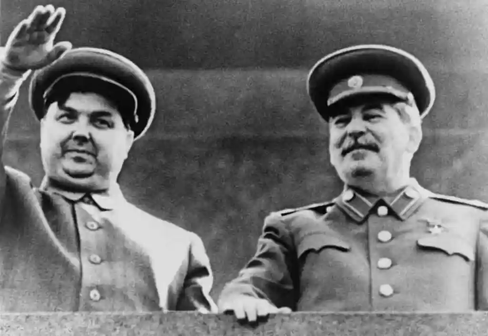

Who Was Georgy Malenkov?
Georgy Maksimilianovich Malenkov was born on January 8, 1902, in Orenburg, in the Russian Empire. He was the son of a rather wealthy farmer whose ancestors were of Macedonian descent and had served their lives as officers in the older Russian Imperial Army. His mother (little public information) was the daughter of a blacksmith and the granddaughter of an Orthodox priest. Malenkov was both an engineer and politician, a father of three children, 2 sons and 1 daughter, and later on in his life a Russian Orthodox believer.
He was a member of the Communist Party of the Soviet Union from 1920 to 1961, a little bit more than 40 years. He died of natural causes on January 14, 1988, in Moscow, and was then buried at Kuntsevo Cemetery. He is commonly remembered by historians as a simple "transitional" figure from the dictatorship of Stalin to the much calmer regime of Khrushchev.

Quick Facts
| Born | January 8, 1902 in Orenburg, Russian Empire |
| Died | January 14, 1988 in Moscow at aged 86 |
| Party | Communist Party of the Soviet Union (1920–1961) |
| Office | Premier of the Soviet Union, March 1953 to February 1955 |
| Profession | Engineer & Politician |
| Partner (Romantic) | Valeriya Golubtsova |
| Children | 3 |
| School | Moscow Highest Technical School |
| Buried | Kuntsevo Cemetery, Moscow |
He was later played in the satirical film The Death of Stalin.
Early Life
Malenkov was born into his family's farming business and helped his father with the harvest and farming business from a young age. His mother was the daughter of a blacksmith and the granddaughter of an Orthodox priest. He graduated from the Orenburg gymnasium.
In 1918, he volunteered to join the Red Army and fought the White Army soldiers in the Russian Civil War. He joined the Communist Party in 1920, serving as a political commissar. He then became the communist secretary at the Moscow Higher Technical School, where he slowly climbed the communist social ladder across the years.
In 1920, he began living and working with Soviet scientists, some of which had connections to Lenin and studied alongside him for years before the Revolution. This connection to Lenin helped Malenkov in their communist career.
Stalin Takes Notice, 1924
In 1924, Stalin took notice of Malenkov and assigned him to the Orgburo of the Central Committee. In 1925, he began working in the staff of the Organizational Bureau, which put him in charge of maintaining member records, around 200k files a year. Two million files went by him across 10 years, over which Malenkov won Stalin's confidence and became one of his personal secretaries.
Rise to Power
Power Through the Purges
From 1930 to 1934, Malenkov was head of personnel in the Moscow party organization, directly under Kaganovich, his job was to eliminate the enemies of Stalin. In 1934, he returned to the central committee as chief to Nikolai Yezhov, who later became head of the secret police. During the Stalinist purges, Malenkov controlled the folders containing detailed information about all party members and even recommended who should be killed and who would replace them.
In 1938, he was one of those who caused the downfall of the NKVD. By 1939, he became head of the Cadres Directorate and a member of the Central Committee Secretariat. Two years later, in February 1941, he became a candidate member of the Politburo.
Party officials reported that Malenkov personally had participated in the interrogation under torture and elimination of as many as 3.5k Armenian communists in 1937. - Paul D. Steeves, EBSCO Research Starters, 2023
Career Timeline
World War II (1941–1945)
The War Committee

On June 22, 1941, Germany invaded the Soviet Union, making the same mistake as Napoleon, attacking the Soviet Union during the winter. Malenkov was then appointed to the State Defense Committee. This small group held total control over all political and economic life in the country, Malenkov joining it made him one of the five most powerful men in the Soviet Union during World War II.
From 1941 to 1943, he supervised military aircraft production and the development of nuclear weapons. He was later appointed Chief of the Soviet Missile Program by Stalin. In 1943, he became chairman of the committee overseeing post-war economic rehabilitation of liberated areas, in which he held authority even over those who would normally outrank him.
The Missile Legacy
Malenkov supervised the Soviet takeover of the German V2 missile industry, moving it from Peenemünde to Moscow for easier development. This work resulted in the Vostok missiles and the orbiting of Sputnik, one of the largest technological achievements of the 20th century, and the launch of the Space Race.
His Philosophy of Talent
Instead of testing candidates for ideological loyalty, Malenkov looked for engineers and scientists who actually knew what they were doing. He pushed back against political commissars who had no real understanding of technology. His focus on technical expertise over ideology ended up being one of the most important decisions he ever made.
Defeating Zhdanovshchina
A major ideological debate shaped the late war and postwar years. Andrei Zhdanov argued that ideology trumped science and called for prioritizing political education over technical expertise. Malenkov opposed and pushed the values of science and engineering. They had proven extraordinarily successful during the war, and the united opposition of Malenkov and his allies ultimately defeated Zhdanov's proposals.
Zhdanov died in 1948. With support, Malenkov manufactured the “Leningrad affair,” which resulted in the arrests of thousands of communists associated with Zhdanov, and the execution of 23 leaders. Over two thousand managers and intellectuals were exiled.
The Premiership (1953–1955)
The “New Course”
On March 5, 1953, Stalin died. In less than a day, Malenkov became Chairman of the Council of Ministers and First Secretary, all the posts that Stalin had held. Most government ministries were brought under Malenkov's direct oversight.
A new world war, with modern weapons, means the end of world civilization. - Georgy Malenkov, March 1954
After receiving a report from senior physicists about the dangers of thermonuclear war, Malenkov pursued a policy of peaceful coexistence with the United States, a complete change from Stalinist doctrine. When it came to diplomacy he always took the peaceful line, while still keeping Eastern European countries under Soviet influence.
Consumer Economy
Advocated refocusing the economy on consumer goods through heavy industry, with the goal of raising living standards for citizens.
Agricultural Reform
Pushed for tax cuts for peasants, higher prices paid to collective farms, and incentives for peasants to cultivate their private plots.
Peaceful Coexistence
Claimed that modern nuclear war would end civilization. Bringing about the end of armed conflict in Korea and sought a new relationship with the West.
Military Cuts
Reductions in arms appropriations, policies resisted by military leaders who considered heavy industry vital in any possible conflict with the West.
Those policies were never fully put in place because of opposition from party members who saw his focus on light industry as a “rightist deviation.” On February 8, 1955, he was forced to resign, accused of abuse of power and a lack of ability to direct the government. He was succeeded by Marshal Nikolai Bulganin. His economic program was abandoned and then eventually adopted by Khrushchev.
Historical Significance
Summary
Malenkov is commonly seen as a transition figure from the dictatorship of Stalin to the much more relaxed Khrushchev. Ironically, Khrushchev eventually supported many of the reforms first placed by Malenkov, including the focus on consumer goods and the doctrine of peaceful coexistence that became the cornerstone of Cold War era Soviet foreign policy.
Historians have credited Malenkov with proposing ideas that later leaders, including Gorbachev, claimed as their own. In the nuclear era, Malenkov said both superpowers had to establish a relationship that was not premised on war being inevitable. This became Khrushchev's doctrine of peaceful coexistence. - The New York Times, February 2, 1988
His supervision of aircraft production during World War II helped fight against Germany. His leadership of the missile program laid the groundwork for the later Space Race, one of the largest competitions of the 20th century. He was also very well viewed by foreign nations at his time.
His life shows the harsh ways of Soviet politics, a man capable of both overseeing mass murders and genuinely advocating for a less militaristic, more humane Soviet society. His life was neither completely bad nor completely good, but it is important to understanding global history of the 20th century.
Final Years
He was exiled to Kazakhstan, where he was put in charge of a plant. In 1961, he was kicked out of the Communist Party. At first he claimed to have heavy depression after his loss of power, but later felt relieved from the hard life of being a ruler. He ended up spending his final years at a dacha outside Moscow.
He converted to Russian Orthodoxy with his daughter, who actually spent some of her wealth building churches. The Orthodox Church said he had been a singer and reader for the church in his final years. His funeral, held in January 1988, was a very private event.
Foreign Assessment, British Ambassador Sir William Hayter, 1954
The British Ambassador William Hayter described Malenkov as seeming “easily the most intelligent and quickest to grasp what was being said.” He was supposedly an “extremely agreeable neighbour at the table” who spoke “well-educated Russian” with a “pleasant, musical voice.” Hayter said that Khrushchev, on the other hand, struck him as “alarmingly ignorant of foreign affairs,” and even had to have things explained to him by Malenkov in “words of one syllable.”
Sources
Works Cited
- Britannica Editors. “Georgy Maksimilianovich Malenkov.” Encyclopædia Britannica. Britannica Article
- “Georgi Malenkov Dies at 86; Stalin Successor.” The New York Times, 2 Feb. 1988. NYTimes Article
- “Georgy Malenkov.” Wikipedia: The Free Encyclopedia. Wikipedia Article
- HISTORY.com Editors. “Georgy Malenkov Succeeds Stalin.” HISTORY, 2 Mar. 2025. HISTORY Article
- Steeves, Paul D. “Georgi M. Malenkov.” Research Starters: History. EBSCO Information Services, 2023. EBSCO Article